Experience Beautiful Izu
美しい海で遊び、絶景を眺め、 温泉で癒される。 伊豆には自然を全身で楽しめる体験が数多くあります。 あなたらしい旅を見つけてみませんか。
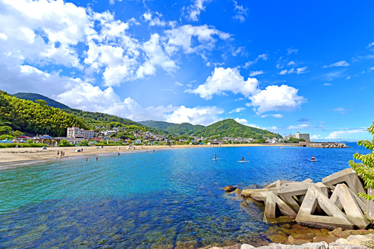
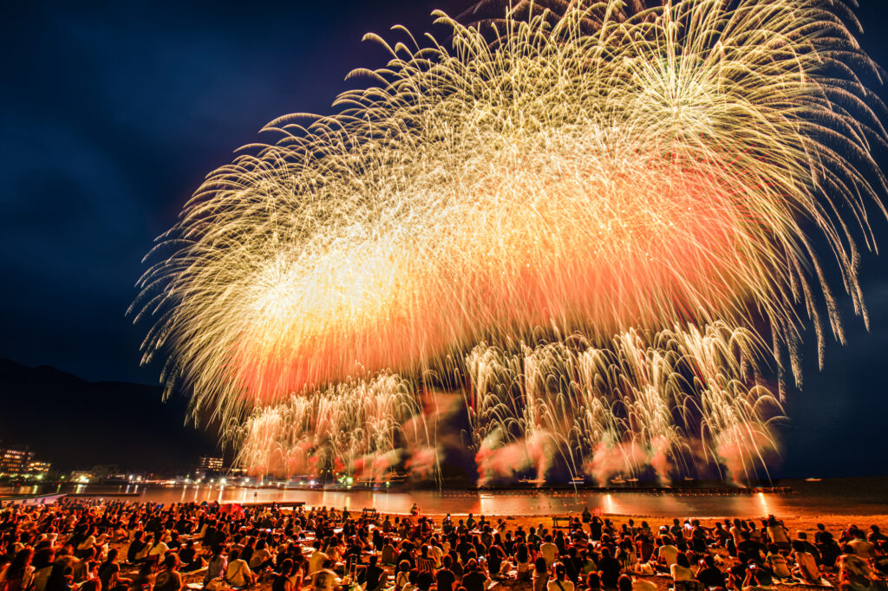
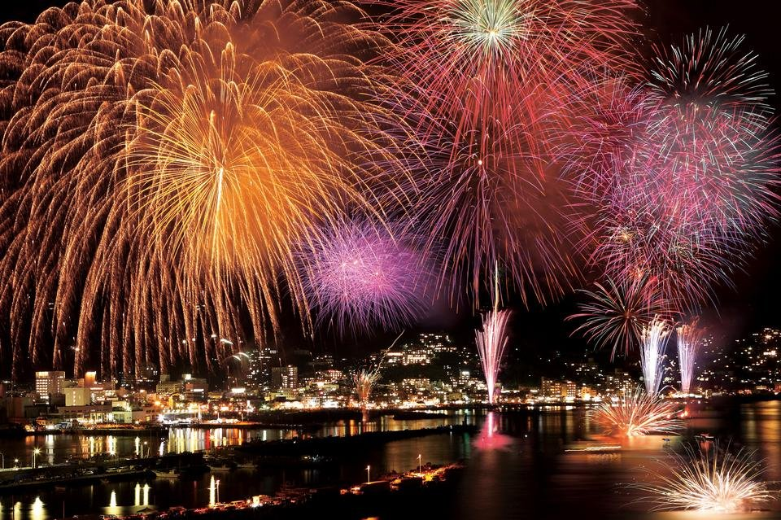
花火
伊豆の夏を彩る花火大会は、 海辺から打ち上がる迫力満点の花火が魅力です。 特に熱海海上花火大会は一年を通して開催され、 海に響く音と水面に映る光景は圧巻。 夏には下田や伊東など各地でも花火大会が行われ、 旅行の思い出をより特別なものにしてくれます。
AREA
熱海・伊東・下田
SEASON
夏（一部通年）
POINT
海上花火
BEST TIME
夜
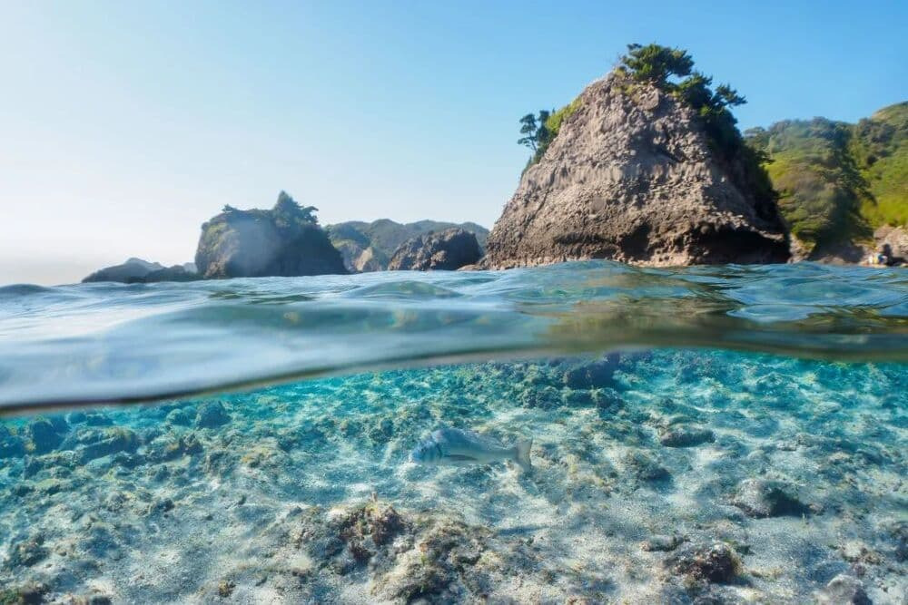
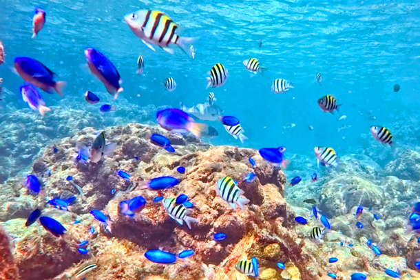
シュノーケリング
透明度の高い海で楽しめるシュノーケリングは、 伊豆を代表する人気アクティビティの一つです。 ヒリゾ浜や九十浜などでは、 色鮮やかな魚やサンゴを間近で観察することができ、 まるで天然の水族館のような景色が広がります。 初心者向けのツアーも充実しているため、 家族や友人同士でも安心して海の世界を体験できます。
AREA
ヒリゾ浜・九十浜
SEASON
夏
POINT
透明度抜群の海
BEST TIME
午前中
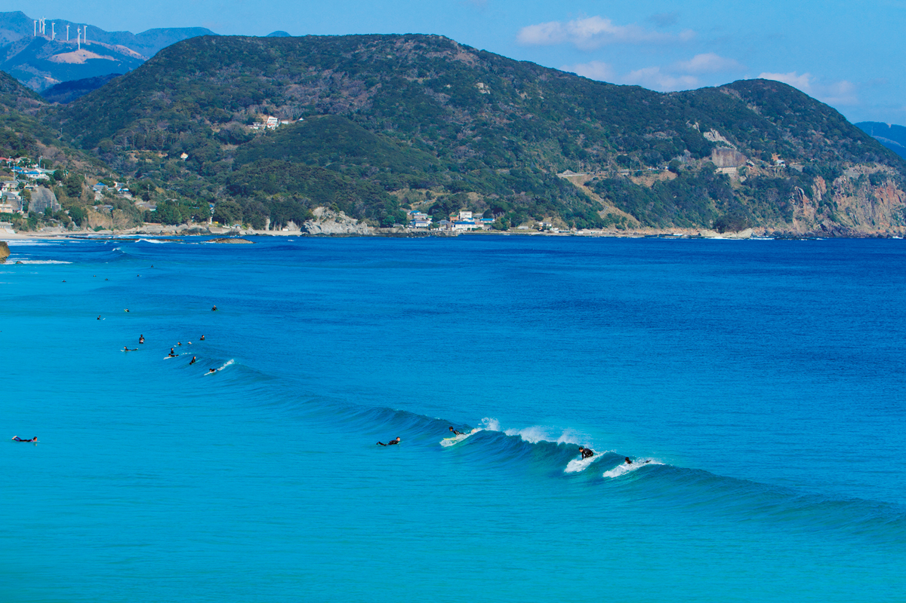
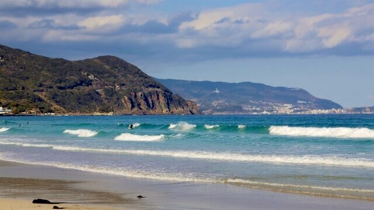
サーフィン
白浜海岸や多々戸浜をはじめ、 伊豆にはサーフィンを楽しめるビーチが数多くあります。 穏やかな波の日は初心者にも挑戦しやすく、 経験者向けのポイントも豊富です。 青い海と広い砂浜に囲まれながら波に乗る時間は、 伊豆ならではの爽快な体験となります。
AREA
白浜・多々戸浜
SEASON
春〜秋
POINT
初心者〜上級者まで楽しめる
BEST TIME
朝・夕方
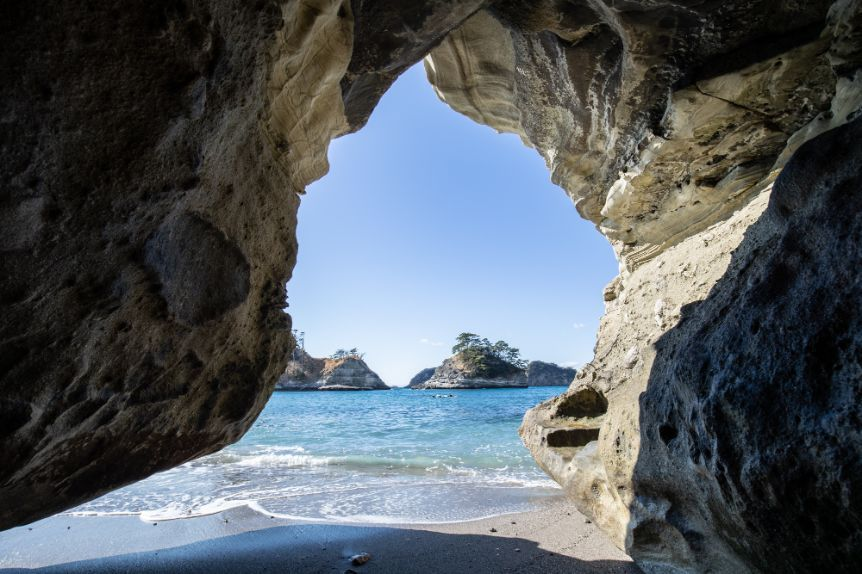
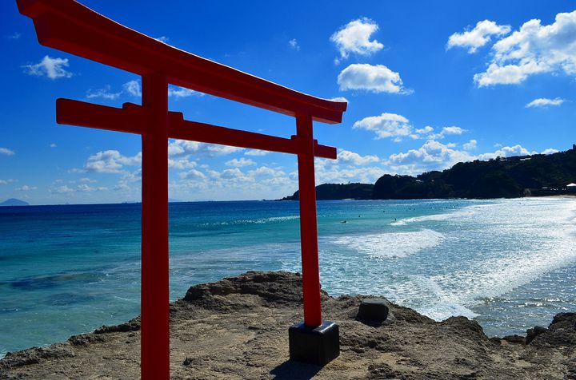
写真
大室山や恋人岬、堂ヶ島など、 伊豆には思わず写真を撮りたくなる絶景スポットが数多くあります。 青く広がる海や夕日に染まる水平線、 四季折々の自然が織りなす風景は、 どこを切り取っても絵になる美しさです。 大切な人との思い出や旅の記録を、 伊豆の絶景とともに写真に残してみてください。
AREA
大室山・堂ヶ島・恋人岬
SEASON
通年
POINT
絶景フォトスポット
BEST TIME
朝・夕方
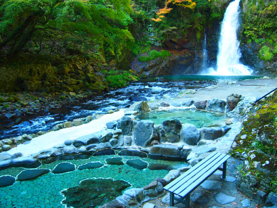
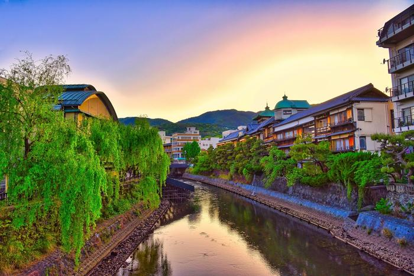
温泉
伊豆には修善寺温泉や下田温泉、北川温泉など、 歴史ある温泉地が数多く点在しています。 海を眺めながら入る露天風呂や、 山々に囲まれた静かな湯宿など、 場所ごとに異なる魅力を楽しめます。 旅の締めくくりに温泉でゆっくりと疲れを癒し、 心も体もリフレッシュしてみてはいかがでしょうか。
AREA
修善寺・下田・北川
SEASON
通年
POINT
露天風呂・癒し
BEST TIME
夕方〜夜
Let's Go to Izu
海も、絶景も、温泉も。
伊豆には、まだ知らない魅力がたくさんあります。
自然の中で思いきり遊び、
おいしいものを食べ、
温泉でゆっくり癒される。
あなたもぜひ、
自分だけの伊豆の旅を見つけてみてください。